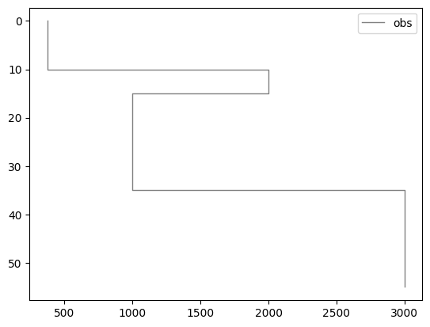
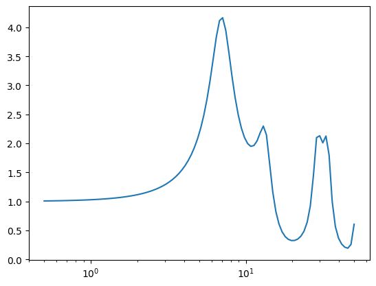

Forward Modeling HVSR#
inspired by Herak (2008)
1. Import packages#
import numpy as np
import matplotlib.pyplot as plt
2. Fungsi AMP dan H/V#
Fungsi AMP dari Tsai (1980)#
def AMP(vel, density, H, Q, k_Q, Fref, F):
"""
"""
# velocity length
len_V = len(vel)
# frequency length
len_F = len(F)
# generate variables
AMP = np.zeros(len_F)
A = np.zeros(len_V, dtype='complex_')
B = np.zeros(len_V, dtype='complex_')
S = np.zeros(len_V, dtype='complex_')
alpha = np.zeros(len_V, dtype='complex_')
# starting values
A[0] = 1
B[0] = 1
for i in range(len_F):
for j in range(1, len_V):
# frequency-dependent velocity
if Fref != 0:
# still haven't known yet the reference, Invert Q filter by downward continuation (?)
# in Compensating for attenuation by inverse Q filtering (Crewes, 2004) (?)
FAC = np.sqrt( 2 / (1 + np.sqrt(1 + (Q[j] * F[i]**k_Q)**(-2))) * (1 - 1j/(Q[j] * F[i]**k_Q)) )
FACm1 = np.sqrt( 2 / (1 + np.sqrt(1 + (Q[j - 1] * F[i]**k_Q)**(-2))) * (1 - 1j/(Q[j - 1] * F[i]**k_Q)) )
vj = vel[j] * (1 + 1/(np.pi * (Q[j] * F[i]**k_Q)) * np.log(F[i]/Fref)) / FAC
vjm1 = vel[j - 1] * (1 + 1/(np.pi * (Q[j - 1] * F[i]**k_Q)) * np.log(F[i]/Fref)) / FACm1
else:
vj = vel[j]
vjm1 = vel[j - 1]
# impedance ratio
alpha[j - 1] = (density[j - 1] * vjm1) / (density[j] * vj)
# Equation (7) Tsai 1970 -> s = k * H -> k = w / c
S[j - 1] = (2 * np.pi * F[i] * H[j - 1] / vjm1)
# Equation (10) Tsai 1970 -> matrix equation (?)
A[j] = 0.5 * ( (1 + alpha[j - 1]) * np.exp(1j*S[j - 1]) * A[j - 1] +
(1 - alpha[j - 1]) * np.exp(-1j*S[j - 1]) * B[j - 1] )
B[j] = 0.5 * ( (1 - alpha[j - 1]) * np.exp(1j*S[j - 1]) * A[j - 1] +
(1 + alpha[j - 1]) * np.exp(-1j*S[j - 1]) * B[j - 1] )
AMP[i] = 1/np.absolute(A[len_V - 1])
# ReIm = np.exp(1j * S[0]) * A[-1] / A[0]
# AMP[i] = 1/np.absolute(ReIm)
return AMP
Fungsi H/V#
Pada bagian ini, asumsi Vp dan densitas dapat didekati dengan persamaan empiris
def HV(vp, vs, density, H, Qp, Qs, k_Q, Fref, F):
"""
"""
AMPp = AMP(vp, density, H, Qp, k_Q, Fref, F)
AMPs = AMP(vs, density, H, Qs, k_Q, Fref, F)
return AMPs/AMPp
def Vs2Vp(Vs):
"""
"""
Vs = Vs / 1000
return 1000 * (0.9409 + 2.0947 * Vs - 0.8206 * np.power(Vs, 2) + 0.2683 * np.power(Vs, 3) - 0.0251 * np.power(Vs, 4))
def Vp2Density(Vp):
"""
"""
Vp = Vp / 1000
return 1.6612 * Vp - 0.4721 * np.power(Vp, 2) + 0.0671 * np.power(Vp, 3) - 0.0043 * np.power(Vp, 4) + 0.000106 * np.power(Vp, 5)
def HVe(vs, H, Qp, Qs, k_Q, Fref, F):
"""
Use Vs2Vp() and Vp2Density() functions to estimate vp and density
"""
vp = Vs2Vp(vs)
density = Vp2Density(vp)
return HV(vp, vs, density, H, Qp, Qs, k_Q, Fref, F)
3. Implementasi#
Set model#
vs = np.array([375., 2000., 1000., 3000.])
H = np.array([10., 5., 20.])
Qp = np.array([15, 30, 60, 100])
Qs = np.array([5, 10, 20, 50])
k_Q = 0.25
F = np.logspace(np.log10(0.5),np.log10(50),100)
Fref = 1
Fungsi plot model#
def plot_v(vs, H, color='grey', linewidth=1, linestyle='-', ax = None, label="v", zorder=None):
cumH = np.cumsum(H)
cumH = np.append(cumH, cumH[-1] + H[-1])
cumH = np.insert(cumH, 0, 0)
vs = np.insert(vs, 0, vs[0])
if ax is None:
line, = plt.step(vs, cumH, where="post", color=color, linestyle=linestyle, linewidth=linewidth, zorder=zorder, label=label)
else:
line, = ax.step(vs, cumH, where="post", color=color, linestyle=linestyle, linewidth=linewidth, zorder=zorder, label=label)
return line
Tampilan model#
plot_v(vs, H, label="obs")
plt.gca().invert_yaxis()
plt.legend()
<matplotlib.legend.Legend at 0x117cc3670>

Forward modeling -> Kurva HVSR#
hv_calc = HVe(vs, H, Qp, Qs, k_Q, Fref, F)
plt.plot(F, hv_calc)
plt.semilogx()
[]
